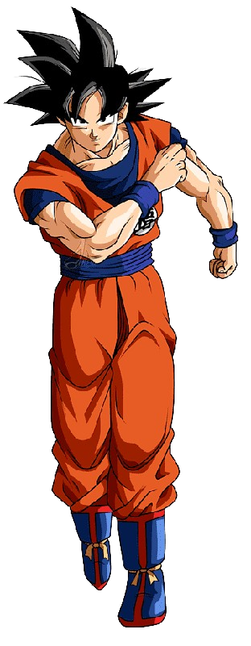

GOKU

SAIYAN
Bioandroide creado para alcanzar la perfección. Posee las células de guerreros como Freezer, King Cold, Goku, Vegeta y Piccolo, lo que le permite utilizar sus técnicas y aumentar su poder constantemente. Su objetivo es convertirse en el ser perfecto.
ELITE